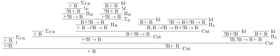
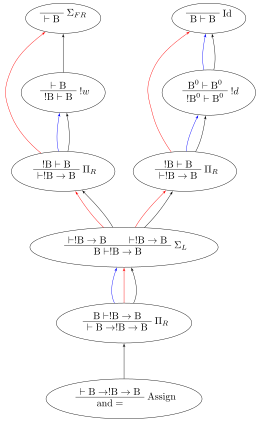
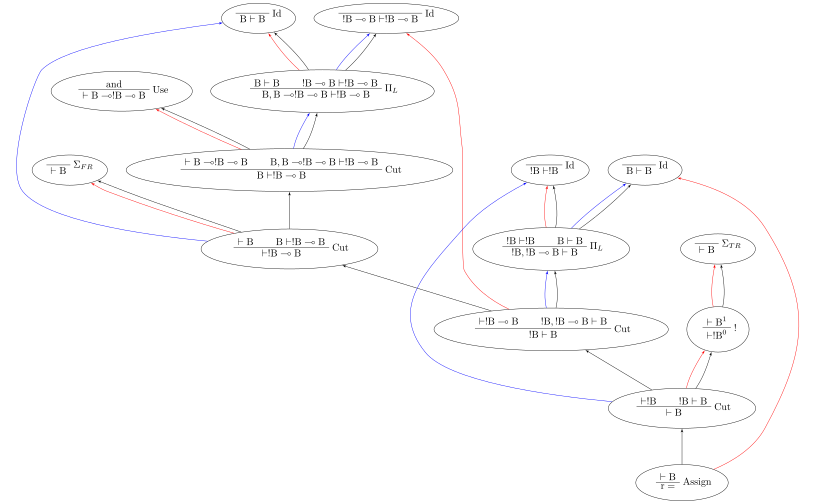

Core syntax
Stroscot takes after Haskell in that all of the language is compiled to a smallish core language. This makes it easier to implement code transformations and new backends. Proofs are programs by the Curry-Howard correspondence, so the core is the jumbo two-sided linear logic sequent calculus. Reduction of this core corresponds to cut elimination - the normal forms (values) are cut-free terms. But we need a syntax for all the proofs.
Example
We use a simple program, boolean “and”, presented in a Haskell-ish language:
and = \x -> case x of { False -> \_ -> False; True -> \y -> y }
r = and False True : Bool
Derivation tree
See the connectives \(\text{B} = \text{Bool}\) and \(\multimap\) defined above. \(\multimap\) is right associative as usual. Our program then has the following derivation tree, among others (we could add a bang to the first argument, use a multiple-argument function instead of currying, expand out the identity, etc.).
The derivation tree representation suffers from what Girard calls “bureaucratic problems of transposing rules” ([Gir89], page 30 / 98). Girard’s example is based on cut elimination; but it is also visible in the specification of the proof tree as rule reordering. For example the cuts on \(\Sigma_{F R}\) and “Use and” can be swapped without changing the meaning. The derivation tree is also ambiguous in that rule invocations with a sequent like \(A, A \vdash B\) are ambiguous as to which proposition \(A\) is used - this isn’t resolved by using the exchange rule as then exchange on \(A, A, A \vdash B\) is ambiguous as to which pair of formulas was swapped.
Nets
We can split up the derivation tree into a graph, where each node is a rule instance (the vertical bar in the derivation tree) and the syntactic subderivation relationship is a black edge.
To solve the bureaucratic problems there is another set of connecting edges, the red/blue edges in the graph. The edges are each proposition’s introduction/elimination (highest and lowest usage). Exchange rules can be omitted because we reference the propositions directly. The color is for clarity - a proposition on the left (antecedent) is blue and likewise right (succedent) is red. In the code each edge is identified as a unique variable in a slot, so there is no coloring. But depicting n-ary ports in a visual way without ambiguity seems hard.
Most rules do not modify the contexts \(\Gamma, \Delta, \Theta, \Lambda\) and so the proposition edge skips the node as it is not an introduction/elimination (gray in the presentation above). But there are exceptions that do need the context:
\(\Pi_R\) and \(\Sigma_L\) rename and combine the context from each case, similar to a phi-node. This can be skipped if there’s exactly one case.
Exponential promotion defines a box around a subtree of the derivation, and the box edge must be clearly defined so we can duplicate/erase it properly, so we keep the context there.
Use/Assign, so that substitution has something to work with and the free variables are identified
Expression graph
The syntactic subderivation inclusion relationship is somewhat redundant in that we can reconstruct it from the blue/red edges, at least up to cut permutation. If we drop the syntactic inclusion relationship, reverse the directions of the blue edges, and drop the sequents, then the graph looks much more like your traditional expression tree. In particular cuts and identities become straight edges rather than top/bottom. PiL is an application node, PiR is a lambda, SigmaL is case, and SigmaR is a constructor (depicted in the graph as True/False).
The identity nodes function like thunk identifiers; the stuff in between the identity and the cut on the blue edges is like the stack of the thunk. An I right next to a Cut is a no-op so for example the 2 blue Cut-I edges above the True and False and the red Cut-I edge above the PiL in the r= expression can be squinched together. Then the path from the assignment node to the use node reads “push !True to stack, push False to stack, reduce with and” (recall the original expression was and False True).
Bad syntax
The bad syntax serializes the non-simplified net into a textual form by writing each node using Haskell’s datatype syntax. You can see the datatypes in Core.hs. Each edge has a unique identifier, and the nodes are nameless. The order of the nodes is arbitrary. We should also write out the types of the formulas (blue/red edges), so they can be used to reconstruct the full sequent as in the presentation above. But for now Core is untyped, so there is only one universal type and the types of the edges are not written out.
Identity (Rule {top = (), bottom = Sequent {turnstile = EID "iseq83", left = EID "iret84", right = EID "ret82"}})
BangD (Rule {top = Sequent {turnstile = (Level 3,EID "iseq83"), left = (Level 3,EID "iret84"), right = ()}, bottom = Sequent {turnstile = (Level 3,EID "seq80"), left = (Level 3,EID "i81"), right = ()}}),
PiR (Rule {top = [(Tag "func",Sequent {turnstile = EID "seq80", left = ([],[EID "i81"]), right = ([EID "ret82"],[])})], bottom = Sequent {turnstile = EID "c_bseq79", left = [], right = (EID "newrretf78",[])}})
Bang (Rule {top = Sequent {turnstile = (Level 3,EID "c_bseq79"), left = [], right = ((Level 3,EID "newrretf78"),[])}, bottom = Sequent {turnstile = (Level 2,EID "dseq76"), left = [], right = ((Level 2,EID "newrret74"),[])}})
Identity (Rule {top = (), bottom = Sequent {turnstile = EID "idseq77", left = EID "lret75", right = EID "newrretf66"}})
PiL (Tag "func") (Rule {top = ([Sequent {turnstile = EID "dseq76", left = (), right = EID "newrret74"}],[Sequent {turnstile = EID "idseq77", left = EID "lret75", right = ()}]), bottom = Sequent {turnstile = EID "c_lseq68", left = EID "lval70", right = ()}})
...
Cut (Rule {top = (Sequent {turnstile = EID "c_rseq3", left = (), right = EID "rval5"},Sequent {turnstile = EID "c_lseq2", left = EID "lval4", right = ()}), bottom = Sequent {turnstile = EID "retseq0", left = (), right = ()}})
Assign (VID "m") (Rule {top = Sequent {turnstile = EID "retseq0", left = [], right = [EID "ret1"]}, bottom = ()})]
It’s not great because there is a lot of noise from the record syntax.
Removing all except bottom/top and edge numbers gives a more compact rendering:
Identity 83 84 82
BangD 83 84 | 80 81
PiR [func 80 81 82] | 79 78
Bang 79 78 | 76 74
Identity 77 75 66
PiL func 76 74 77 75 | 68 70
...
Cut 3 5, 2 4 | 0
Assign m 0 1
It’s still pretty bad though.
Better syntax
A better syntax is based on naming the nodes rather than the edges. The edges can be identified by slot numbers on the nodes. Furthermore we only have to write the edges of the source nodes (rule tops), the slots on the destination nodes (rule bottoms) can be inferred. Even the arity and levels of the rule bottoms can be inferred from the tops. Finally we drop the record field names as they are always in the same order, the empty Rule {()} of Identity, and empty placeholder tuples of Sequent. So we end up with:
1 = Identity,
2 = BangD {{(Level 3,1/0), (Level 3,1/1)}},
3 = PiR {[(Tag "func",{2/0, ([],[2/1]), ([2/2],[])})]},
4 = Bang {{(Level 3,3/0), [], ((Level 3,3/1),[])}},
5 = Identity,
6 = PiL func {([{4/0, 4/1}],[{5/0, 5/1}])},
7 = Identity,
8 = BangD {{(Level 2,7/0), (Level 2,7/1)}},
9 = Cut {({8/0, 7/3},{6/0, 6/1})},
10 = Bang {{(Level 2,9/0), [(Level 1,8/1)], ((Level 2,10/2),[])}},
11 = Identity,
12 = PiL func {([{10/0, 10/2}],[{11/0, 11/1}])},
13 = Identity,
14 = BangD {{(Level 2,13/0), (Level 2,13/1)}},
15 = Bang {{(Level 2,14/0), [(Level 1,14/1)], ((Level 2,13/2),[])}},
16 = Identity,
17 = PiL func {([{15/0, 15/2}],[{16/0, 16/1}])},
18 = Identity,
19 = BangD {{(Level 1,18/0), (Level 1,18/1)}},
20 = Cut {({19/0, 18/2},{17/0, 17/1})},
21 = BangC {{20/0, [19/1,15/1]}},
22 = PiR {[(Tag "func",{21/0, ([],[21/1]), ([16/2],[])})]},
23 = Cut {({22/0, 22/1},{12/0, 12/1})},
24 = PiR {[(Tag "func",{23/0, ([],[10/1]), ([11/2],[])})]},
25 = Bang {{(Level 1,24/0), [], ((Level 1,24/1),[])}},
26 = Identity,
27 = PiL func {([{25/0, 25/1}],[{26/0, 26/1}])},
28 = Identity,
29 = BangD {{(Level 1,28/0), (Level 1,28/1)},
30 = Bang {{(Level 1,29/0), [(Level 0,29/1)], ((Level 1,28/2),[])}},
31 = Identity,
32 = PiL func {([{30/0, 30/2}],[{31/0, 31/1}])},
33 = Identity,
34 = BangD {{(Level 0,33/0), (Level 0,33/1)}},
35 = Cut {({34/0, 33/2},{32/0, 32/1})},
36 = BangC {{35/0, [34/1,30/1]}},
37 = PiR {[(func,{36/0, ([],[36/1]), ([31/2],[])})]},
38 = Cut {({37/0, 37/1},{27/0, 27/1})},
39 = Assign m {{38/0, [], [26/3]}})
Real syntax
An idea of how a real syntax might look:
"and" = Assign d
d = PiR
^func \[e],[]. [f],[] ->
f = SigmaL e
^False \. f1 ->
f1 = PiR
^func \[g1]. h1
h1 = False
[] = BangW g1
^True \. f2 ->
f2 = PiR
^func \g2. h2r
h2 = BangD g2
h2r = I h2
"r" = Assign pr
n = Cut a
a = Bang b
b = True
m = Cut lr
k = Cut c
c = False
j = Cut d2
d2 = Use "and"
[(l,
lr = I l
)] = PiL ^func j [(kr,
kr = I k
)]
[(p,
pr = I p
)] = PiL ^func m [(nr,
nr = I n
)}
C2 syntax
C2’s syntax for sea-of-nodes looks like:
22 ConI === 0 [[ 31 23 ]] #int:1
10 Parm === 3 [[ 37 23 31 31 ]] Parm0: int !jvms: CompTest::comp @ bci:-1
23 CmpI === _ 10 22 [[ 24 ]] !jvms: CompTest::comp @ bci:2
24 Bool === _ 23 [[ 25 ]] [le] !jvms: CompTest::comp @ bci:2
25 > If === 5 24 [[ 26 27 ]] P=1.000000, C=6701.000000 !jvms: CompTest::comp @ bci:2
26 IfTrue === 25 [[ 38 ]] #1 !jvms: CompTest::comp @ bci:2
27 IfFalse === 25 [[ 31 ]] #0 !jvms: CompTest::comp @ bci:2
11 Parm === 3 [[ 23 ]] Parm1: int !jvms: X::foo1 @ bci:-1
10 Parm === 3 [[ 23 ]] Parm0: int !jvms: X::foo1 @ bci:-1
3 Start === 3 0 [[ 3 5 6 7 8 9 10 11 ]] #{0:control, 1:abIO, 2:memory, 3:rawptr:BotPTR, 4:return_address, 5:int, 6:int}
23 AddI === _ 10 11 [[ 24 ]] !jvms: X::foo1 @ bci:2
9 Parm === 3 [[ 24 ]] ReturnAdr !jvms: X::foo1 @ bci:-1
8 Parm === 3 [[ 24 ]] FramePtr !jvms: X::foo1 @ bci:-1
7 Parm === 3 [[ 24 ]] Memory Memory: @BotPTR *+bot, idx=Bot; !jvms: X::foo1 @ bci:-1
6 Parm === 3 [[ 24 ]] I_O !jvms: X::foo1 @ bci:-1
5 Parm === 3 [[ 24 ]] Control !jvms: X::foo1 @ bci:-1
24 Return === 5 6 7 8 9 returns 23 [[ 0 ]]
0 Root === 0 24 [[ 0 1 3 ]] inner
It’s a debug syntax to output the node graph. The node names are supposed to be fixed width but as you can see they didn’t hold to it with IfTrue.
Normal Order Reduction
Looking at the graph for our simple and False True example we can see the general pattern for reduction, at least normal-order leftmost-outermost reduction. We start at the root and go down. The first node we encounter is not a data node SigmaRight / PiRight / etc. (we would stop with WHNF, and evaluate the children with NF), instead it is an identity node. Since there is only one root node, the highest parent of the other side of the identity must be a cut node (unless the root node has a blue input edge). We then reduce this cut node. In this case it disappears and we move up to the PiL-PiR cut node. Here we create two cut nodes, one cuts the PiL near the root and the output of the SigmaL while the other cuts Id-Cut-False and the input of the SigmaL. The cut on the output of the SigmaL is blocked, so we go up the input of the SigmaL and our reduction stack looks like Root -> I -> PiL -> Cut -> SigmaL -> Cut. First we cut the Id and then we cut False-SigmaL. This selects the left PiR with !w/False for our output. We cut this with the PiL with !True, creating a disconnected cut between !True and !w (that is immediately erased) and another cut between our result and the root identity node. We erase the identity and end with our result False.
So the general pattern is, go down red / go up blue until you get to a redex (cut node, dup node)
Cut elimination
For all reductions:
Move the two nodes of the cut next to the cut, replacing use with copy-paste
Identity
Copy the cut’s non-identity edge to the non-cut edge that links to the identity node. If the cut has levels then label with (id edge)->(non-id edge).
Delete cut and identity
Matching left/right Pi/Sigma
Erase non-matching cases, if any
Link context variables of matching case with outside variables, if any
Nodes should have same # of edges. Create cut nodes for each edge-pair.
Link cut nodes with matching variable on each side.
Preserve cut’s level numbers (but not active status) for red-red, swap for red-blue
Delete PiR/PiL nodes
Promotion/contraction
Create duplication nodes for each out-edge of promotion, color=red/blue
Link duplication nodes, if multiple
Duplicate !p node and point to duplication node, marking one with arrowhead
Duplicate cut and point to each side of contraction + !p nodes
Create new contraction node for each context variable pointing to the two !p’s
Change references to !p to references to context contraction nodes
Delete original !c contraction node
Promotion/Dereliction
Replace cut’s blue edge with edge of dereliction
Move level on cut’s red edge to cut’s blue edge, if not set
Replace cut’s red edge with red edge of promotion
For each context edge going into !p, replace edge with !p’s edge
Delete dereliction and promotion
Duplication:
Duplicate node
Create duplication node for each out-edge of node, copying edge from node
Point each copy’s edge to duplication node
Add arrowheads to one of the copy’s edges (higher number)
Change dup node’s references to point to node copies, deleting arrowheads & using to disambiguate
Link duplication nodes / fix links
Multi-node Duplication:
Duplicate nodes & rename
Fixup node copies to point within themselves
Create duplication node for each non-active out-edge of node, copying edge from node
Replace each copy’s non-active edges with edge to duplication node.
Remove arrowheads from first copy’s non-active edges. Add arrowheads to second copy set’s non-active edges.
Change dup node’s references to point to node copies, deleting arrowheads & using arrowheads to disambiguate
Link duplication nodes / fix links
Dup-Id-Dup:
Duplicate identity node
Replace references to dup nodes with identity reference (odot=higher)
Delete duplication nodes and links
For !w/?w we delete the rule with ! and create no cuts.
To eliminate \(\forall\) or \(\exists\), we extend the variable substitution to the other side.
The commuting cases are mostly handled by our graph formalism; cuts on the context are pushed down to where they apply. But for PiRight/SigmaLeft there can be a cut on the context variables. To push it down we need to duplicate the cut and its other side for each case. Of course, if there are only 0/1 cases, there is no duplication. But in general we need to introduce a phi-duplication node; when the phi-dup node encounters an identity it adds the edge from the other side to the context variables. Overall commuting deletes code or exposes more reduction opportunities. There is also the potential to reverse-commute and deduplicate part of the cases, if they are the same.
To expand identities, start with PiRight/SigmaLeft, then use the opposite rule on the opposite side for each case, and terminate with identities. But actually we should prefer to contract identities, searching for expanded identities and replacing them with identities on larger types.